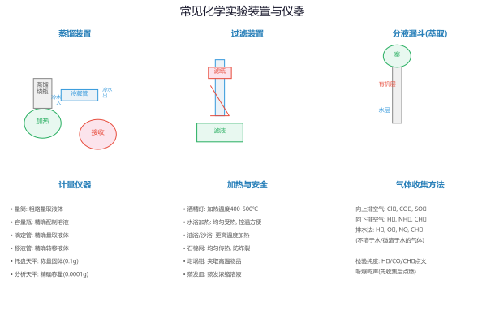
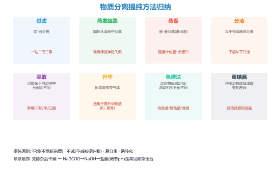
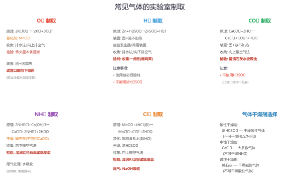
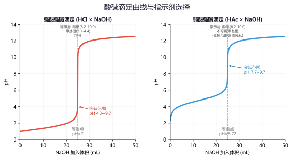
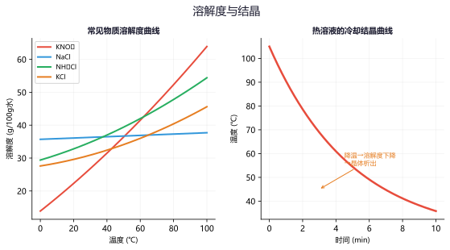
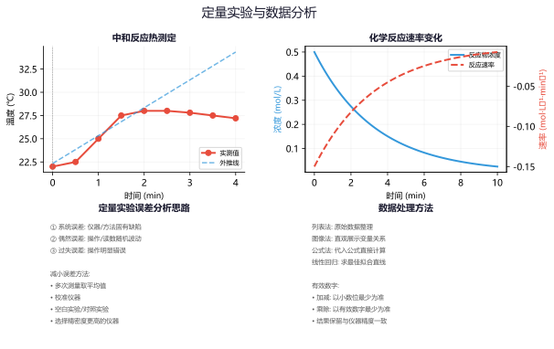

专题一：常用仪器与基本操作
化学实验基础
常见仪器分类：
加热仪器：酒精灯（温度约400-500°C）、酒精喷灯（800-1000°C）、水浴锅（<100°C均匀加热）
计量仪器：托盘天平（精确到0.1g）、量筒（精确到0.1mL，粗量）、滴定管（精确到0.01mL，精量）、容量瓶（精确配制一定体积溶液）、移液管（精确移取一定体积液体）
分离仪器：普通漏斗（过滤）、分液漏斗（分液/萃取）、蒸馏烧瓶（蒸馏）、冷凝管（冷凝回流/蒸馏）
干燥仪器：干燥管（盛装固体干燥剂）、洗气瓶（盛装液体干燥剂/吸收剂）
基本操作规范：
• 加热操作：试管中的液体不超过1/3体积，用试管夹夹持；蒸发皿直接加热，坩埚用坩埚钳夹持
• 气密性检查：关闭活塞，将导管末端浸入水中，用手掌捂热容器，观察导管口是否有气泡冒出
• 试纸使用：pH试纸用玻璃棒蘸取待测液点在试纸上，不得浸入溶液中；淀粉碘化钾试纸检验Cl₂时先润湿
• 洗涤操作：沉淀洗涤用少量蒸馏水多次洗涤（或使用洗瓶洗涤），检验是否洗净需取最后一次洗涤液进行检测

中学化学常用实验仪器示意图——加热类、计量类、分离类、干燥类仪器的结构与用途
例题1：关于化学实验基本操作的下列说法正确的是（ ）
A．用托盘天平称量NaOH固体时，应将NaOH放在滤纸上称量
B．用量筒量取5.25 mL稀盐酸
C．用pH试纸测量某新制氯水的pH
D．检查容量瓶是否漏水时，倒置观察是否漏水，正立后将瓶塞旋转180°再倒置观察
解析：
A✗：NaOH固体具有吸湿性和腐蚀性，应放在玻璃器皿（如小烧杯）中称量，不能放在滤纸上。
B✗：量筒的精确度为0.1 mL，无法量取5.25 mL（精确到0.01 mL需要滴定管或移液管）。
C✗：氯水具有漂白性（含HClO），会将pH试纸漂白无法测出准确pH值。
D✓：容量瓶检漏的正确操作——先倒置→正立→旋转瓶塞180°→再倒置，若不漏液则合格。
答案：D
例题2（操作排序）：配制100 mL 0.100 mol/L NaCl溶液的实验步骤排序：
①定容 ②洗涤烧杯和玻璃棒2-3次 ③计算并称量 ④溶解 ⑤转移至容量瓶 ⑥摇匀 ⑦装瓶贴标签
请排出正确顺序，并说明转移操作中为什么用玻璃棒引流？
解析：
正确顺序：③计算并称量 → ④溶解（小烧杯中）→ ⑤转移至容量瓶（玻璃棒引流）→ ②洗涤烧杯和玻璃棒 → ①定容 → ⑥摇匀 → ⑦装瓶贴标签
关键点：
① 玻璃棒引流的作用：防止溶液溅出容量瓶外，避免溶质损失。
② 洗涤操作：将烧杯内壁和玻璃棒上的残留溶液全部转移到容量瓶中（保证溶质全部转移）。
③ 定容到凹液面最低处与刻度线相切，俯视会导致浓度偏大，仰视导致浓度偏小。
④ 摇匀后液面低于刻度线是正常的（溶液附着在瓶壁上），不能再加水。
误差分析：未洗涤烧杯→浓度偏小；定容时俯视→浓度偏大；摇匀后加水→浓度偏小。
练习1：下列仪器使用前不需要检漏的是（ ）
A．分液漏斗 B．容量瓶 C．长颈漏斗 D．酸式滴定管
答案：C。长颈漏斗无需检漏。分液漏斗的活塞和塞子、容量瓶的瓶塞、滴定管的活塞都需要检漏。
练习2：用酒精灯加热试管中的液体时，试管夹应夹在距管口约多少处？试管口不能对着什么方向？
答案：试管夹夹在距管口约1/3处。试管口不能对着自己或他人（防止液体沸腾喷溅伤人），且试管与桌面约45°角倾斜（增大受热面积）。
专题二：物质的检验与分离提纯
鉴定·鉴别·除杂·分离
常见离子的检验：
阳离子：
• H⁺：紫色石蕊变红 / pH < 7
• Na⁺：焰色反应（黄色，透过蓝色钴玻璃观察）
• K⁺：焰色反应（紫色，透过蓝色钴玻璃观察——排除Na⁺干扰）
• Fe³⁺：加KSCN溶液变红（Fe³⁺+3SCN⁻→Fe(SCN)₃血红色）
• Fe²⁺：加NaOH产生白色沉淀→灰绿色→红褐色；或加K₃[Fe(CN)₆]产生蓝色沉淀
• NH₄⁺：加NaOH加热，产生使湿润红色石蕊试纸变蓝的气体（NH₃）
• Al³⁺：加NaOH溶液产生白色沉淀，过量NaOH沉淀溶解
阴离子：
• SO₄²⁻：加BaCl₂产生白色沉淀（不溶于稀盐酸/稀硝酸）
• Cl⁻：加AgNO₃产生白色沉淀（不溶于稀硝酸）
• CO₃²⁻：加稀盐酸产生使澄清石灰水变浑浊的气体
• I⁻：加氯水和淀粉变蓝（Cl₂+2I⁻→I₂+2Cl⁻，I₂使淀粉变蓝）
分离提纯方法对比：
• 过滤：不溶性固体与液体分离（如粗盐提纯中的泥沙除去）
• 蒸发结晶：溶解度随温度变化不大的溶质从溶液中析出（如NaCl溶液）
• 降温结晶：溶解度随温度变化大的溶质（如KNO₃溶液，降温析出晶体）
• 蒸馏：利用沸点不同分离互溶液体混合物（如石油分馏、制取蒸馏水）
• 萃取分液：利用溶质在互不相溶的溶剂中溶解度不同（如I₂从水中用CCl₄萃取）
• 洗气：气体混合物通过洗涤液除去杂质（如CO₂中混有SO₂用饱和NaHCO₃溶液）

常见物质的分离与提纯实验——过滤、蒸馏、萃取、结晶等操作装置示意图
例题3：有一白色固体粉末可能含有NaCl、KCl、Na₂CO₃、Na₂SO₄中的一种或几种，进行如下实验：
① 取少量样品加水溶解，溶液澄清；
② 取①所得溶液滴加BaCl₂溶液，产生白色沉淀，再滴加过量稀硝酸，沉淀部分溶解；
③ 取②的上清液（过滤后）滴加AgNO₃溶液，产生白色不溶于稀硝酸的沉淀。
试推断白色固体中一定含有哪些成分？可能含有哪些成分？
解析：
分步分析：
① 溶液澄清 → 说明样品能完全溶于水，无难溶性杂质。
② 加BaCl₂产生白色沉淀 → 可能含CO₃²⁻或SO₄²⁻。加过量稀硝酸后"部分溶解"→ BaCO₃溶于稀硝酸（BaCO₃+2H⁺→Ba²⁺+CO₂↑+H₂O），BaSO₄不溶 → 说明既含CO₃²⁻又含SO₄²⁻。
③ 取②上清液加AgNO₃产生不溶于稀硝酸的白色沉淀 → 沉淀为AgCl，说明溶液中有Cl⁻。
但注意：步骤②中加入了BaCl₂（引入了Cl⁻），所以步骤③检出的Cl⁻可能来自原样品也可能来自步骤②。
结论：
一定含有：Na₂CO₃、Na₂SO₄
可能含有：NaCl（步骤③的Cl⁻可能来自BaCl₂的引入，无法判断原样品中是否有Cl⁻）
无法判断：KCl（需做焰色反应通过紫色判断K⁺是否存在，通过黄色判断Na⁺是否存在）
例题4：如何除去下列物质中的少量杂质（括号内为杂质）？写出所用试剂和分离方法。
(1) NaCl固体（NH₄Cl）
(2) CO₂气体（SO₂）
(3) FeCl₃溶液（FeCl₂）
(4) 乙醇（水）
解析：
(1) 加热法：NH₄Cl受热分解为NH₃和HCl气体逸出（NH₄Cl→NH₃↑+HCl↑），NaCl受热不分解。注意：分解后的NH₃和HCl在冷处又会结合为NH₄Cl，需在通风条件下加热。
(2) 洗气法：将混合气体通过饱和NaHCO₃溶液。SO₂+2NaHCO₃→Na₂SO₃+H₂O+2CO₂，既除去SO₂又生成CO₂（不引入新杂质）。不能用Na₂CO₃饱和溶液（CO₂也会与Na₂CO₃反应）。
(3) 氧化法：通入Cl₂（或滴加H₂O₂）。2Fe²⁺+Cl₂→2Fe³⁺+2Cl⁻，将Fe²⁺氧化为Fe³⁺而不引入阳离子杂质。用H₂O₂更好（还原产物为H₂O，无新杂质）。
(4) 加生石灰蒸馏：加入CaO（生石灰）与水反应生成Ca(OH)₂，然后蒸馏收集乙醇。CaO+H₂O→Ca(OH)₂，Ca(OH)₂是难挥发的离子化合物，留在蒸馏烧瓶中。
除杂原则：不增（不引入新杂质）、不减（不减少被提纯物质）、易分离（杂质转化为与目标物易分离的状态）。
练习3：只用一种试剂鉴别NaCl、NH₄Cl、Na₂SO₄、(NH₄)₂SO₄四种无色溶液，应选用哪种试剂？写出鉴别现象。
答案：应选用Ba(OH)₂溶液。NaCl→无现象（或有白色沉淀BaCO₃? 不，NaCl无反应，只是混合）；NH₄Cl→有氨味气体（NH₃↑）；Na₂SO₄→白色沉淀（BaSO₄）；(NH₄)₂SO₄→既有白色沉淀又有氨味气体。
练习4：KNO₃固体中混有少量NaCl，如何提纯？说明原理。
答案：用降温结晶法（重结晶）。原理：KNO₃的溶解度随温度升高急剧增大，NaCl的溶解度受温度影响小。将混合物溶于热水配成饱和溶液，降温后KNO₃大量析出（溶解度骤降），NaCl因溶解度变化小而留在溶液中。过滤即可得到KNO₃晶体。
专题三：气体的制备与性质
发生装置·收集方法·性质验证
常见气体的制备：
O₂：2KMnO₄→K₂MnO₄+MnO₂+O₂↑（固体加热，排水法或向上排空气法）
H₂：Zn+H₂SO₄(稀)→ZnSO₄+H₂↑（固液不加热，排水法或向下排空气法）
CO₂：CaCO₃+2HCl→CaCl₂+CO₂↑+H₂O（固液不加热，向上排空气法，不排水）
Cl₂：MnO₂+4HCl(浓)→MnCl₂+Cl₂↑+2H₂O（固液加热，向上排空气法或排饱和食盐水）
NH₃：2NH₄Cl+Ca(OH)₂→CaCl₂+2NH₃↑+2H₂O（固体加热，向下排空气法，碱石灰干燥）
SO₂：Na₂SO₃+H₂SO₄(浓)→Na₂SO₄+SO₂↑+H₂O（固液不加热，向上排空气法）
气体的干燥与净化：
• 酸性干燥剂：浓硫酸（不可干燥碱性气体NH₃、还原性气体H₂S）
• 碱性干燥剂：碱石灰、生石灰（不可干燥酸性气体CO₂、Cl₂、SO₂）
• 中性干燥剂：无水CaCl₂（不可干燥NH₃，形成CaCl₂·8NH₃配合物）

常见气体的实验室制备装置——O₂、H₂、CO₂、Cl₂、NH₃的发生、净化、收集与尾气处理
例题5：实验室用MnO₂和浓盐酸加热制取Cl₂，并进一步制取少量漂白粉（Ca(ClO)₂），请回答：
(1) 写出制Cl₂的化学方程式，标出电子转移方向和数目。
(2) 该反应中浓盐酸体现什么性质？
(3) 制得的Cl₂中通常混有哪些杂质气体？如何除去？
(4) 写出Cl₂与石灰乳（Ca(OH)₂悬浊液）反应制漂白粉的化学方程式。
解析：
(1) MnO₂ + 4HCl(浓) ─[△]→ MnCl₂ + Cl₂↑ + 2H₂O
电子转移：Mn从+4价→+2价，得2e⁻；Cl从-1价→0价，失2e⁻（每4个HCl中2个被氧化为Cl₂，另2个体现酸性）。
(2) 浓盐酸在此反应中体现酸性和还原性。——酸性（提供Cl⁻生成MnCl₂）+ 还原性（Cl⁻被氧化为Cl₂）。
(3) 杂质：①HCl气体（浓盐酸易挥发），用饱和食盐水除去（HCl在水中溶解度极大，Cl₂在饱和食盐水中溶解度小——利用同离子效应）；②水蒸气，用浓硫酸干燥。
(4) 2Cl₂ + 2Ca(OH)₂ → Ca(ClO)₂ + CaCl₂ + 2H₂O
注意：工业上不用澄清石灰水而用石灰乳，因为澄清石灰水中Ca(OH)₂浓度太小，吸收效率低。
漂白粉成分：有效成分为Ca(ClO)₂，在空气中与CO₂和水反应生成HClO（真正起漂白作用）。
例题6：实验室用NH₄Cl和Ca(OH)₂共热制NH₃，并用向下排空气法收集。
(1) 写出反应的化学方程式。
(2) 干燥NH₃应选用什么干燥剂？为什么不能用浓硫酸和无水CaCl₂？
(3) 如何检验NH₃已收满？
(4) NH₃的尾气处理应用什么装置？能否用水直接吸收？
解析：
(1) 2NH₄Cl + Ca(OH)₂ ─[△]→ CaCl₂ + 2NH₃↑ + 2H₂O
(2) 干燥NH₃应选用碱石灰（CaO+NaOH混合物）。
不能用品名原因：浓硫酸→NH₃是碱性气体，会与浓硫酸反应（2NH₃+H₂SO₄→(NH₄)₂SO₄）；无水CaCl₂→NH₃与CaCl₂形成CaCl₂·8NH₃配合物。
(3) 检验收满的方法：将湿润的红色石蕊试纸放在集气瓶口，若试纸变蓝则已收满（NH₃是唯一使红色石蕊试纸变蓝的气体）。或用蘸有浓盐酸的玻璃棒靠近瓶口，产生白烟（NH₃+HCl→NH₄Cl）。
(4) NH₃极易溶于水（1:700），直接用导管通入水中会发生倒吸。应用防倒吸装置：如漏斗倒扣在水面（倒吸时漏斗与水面脱离）、或用水吸收时在导管末端加一个倒置漏斗。
记忆口诀："碱灰干燥氨，浓硫怕酸碱怕干"——碱性气体用碱性干燥剂。
练习5：实验室用H₂还原CuO的实验中，实验开始时应该先通H₂还是先加热？结束时应该先停止通H₂还是先停止加热？为什么？
答案：实验开始时先通H₂排尽装置内空气（防止H₂与空气混合加热爆炸），再加热。实验结束时先停止加热，继续通H₂至试管冷却（防止生成的Cu在热状态下被空气中的O₂重新氧化为CuO）。关键：氢气易燃易爆，操作核心是"气来热走"。
练习6：实验室用大理石（CaCO₃）和稀盐酸制CO₂时，能不能用稀硫酸代替稀盐酸？为什么？
答案：不能。因为H₂SO₄与CaCO₃反应生成微溶的CaSO₄（CaCO₃+H₂SO₄→CaSO₄+H₂O+CO₂↑），CaSO₄会覆盖在大理石表面阻止反应继续进行（反应很快停止）。实验室制CO₂必须用盐酸。
专题四：定量实验与数据分析
中和滴定·物质的量浓度·数据处理
酸碱中和滴定：
原理：H⁺ + OH⁻ → H₂O，当n(H⁺)=n(OH⁻)时达到滴定终点
指示剂选择：强酸强碱滴定→酚酞或甲基橙均可；强酸弱碱→甲基橙；强碱弱酸→酚酞
操作要点：左手控制活塞（滴定管）、右手摇动锥形瓶、眼睛注视锥形瓶中溶液颜色变化
误差分析方法：
由公式c(待测)=c(标准)×V(标准)/V(待测)分析：
• 标准液读数偏大 → V(标准)偏大 → c(待测)偏大
• 待测液被稀释 → V(待测)内眼偏大 → c(待测)偏小
• 常见误差：滴定管未润洗→偏大；锥形瓶未润洗→无影响；滴定终点读数仰视→偏大；漏液→偏小

酸碱中和滴定实验曲线和装置——pH随标准液体积变化曲线（突跃范围）及滴定操作示意
例题7：用0.1000 mol/L的NaOH标准溶液滴定20.00 mL未知浓度的盐酸。
(1) 应选用什么指示剂？终点颜色变化如何？
(2) 若滴定前碱式滴定管尖嘴部分有气泡，滴定后气泡消失，则测得的盐酸浓度偏大还是偏小？
(3) 平行滴定三次消耗NaOH体积分别为：19.98 mL、20.02 mL、20.80 mL，计算盐酸的浓度。
解析：
(1) 选酚酞（强酸强碱滴定，突跃范围在pH≈4.3-9.7，酚酞的变色范围pH 8.2-10.0在突跃范围内）。
终点颜色变化：无色→浅红色（半分钟内不褪色）。
(2) 偏大。气泡占据了一定体积，滴定后气泡消失，这部分体积被计入了NaOH消耗量，使V(NaOH)读数偏大，计算出的c(HCl)偏大。
(3) 第三次数据20.80 mL明显偏离，应舍去。
平均V(NaOH) = (19.98+20.02)/2 = 20.00 mL
c(HCl) = c(NaOH)×V(NaOH)/V(HCl) = 0.1000×20.00/20.00 = 0.1000 mol/L
注意：有效数字保留4位（与标准液保持一致）。
例题8：用沉淀法测定某Na₂SO₄样品（杂质为NaCl）的纯度。实验步骤：
准确称取样品m g → 溶解 → 加过量BaCl₂溶液 → 过滤 → 洗涤沉淀 → 干燥 → 称量沉淀质量
(1) 加入过量BaCl₂的目的是什么？
(2) 如何判断沉淀已洗涤干净？
(3) 若最终称得BaSO₄沉淀质量为m₁ g，写出样品纯度的计算表达式。
解析：
(1) 加入过量BaCl₂的目的是确保SO₄²⁻完全沉淀（Ba²⁺+SO₄²⁻→BaSO₄↓）。少量SO₄²⁻未沉淀会导致结果偏低。
(2) 检验沉淀洗涤是否干净：取最后一次洗涤液于试管中，滴加AgNO₃溶液，观察是否有白色沉淀产生。若无沉淀，说明已洗涤干净（洗涤液中不再含Cl⁻）。
(3) 纯度计算：
BaSO₄的摩尔质量为233 g/mol，n(BaSO₄)=m₁/233
n(Na₂SO₄)=n(BaSO₄)=m₁/233
m(Na₂SO₄)=m₁/233 × 142（Na₂SO₄摩尔质量=142 g/mol）
纯度 = m(Na₂SO₄)/m × 100% = (142m₁)/(233m) × 100%
关键点：沉淀法测定纯度要注意：①沉淀要完全（加过量沉淀剂）；②沉淀要洗涤干净（除去吸附的杂质离子）。
练习7：用已知浓度的盐酸滴定未知浓度的NaOH溶液（指示剂为酚酞），下列操作导致结果偏大的有：
①酸式滴定管未润洗 ②锥形瓶未润洗 ③滴定前仰视读数，滴定后俯视读数
答案：①偏大（标准液被稀释，消耗体积偏大→待测液浓度偏大）；②无影响（锥形瓶中的待测液物质的量不变，消耗标准液体积不变）；③偏小（仰视初始读数偏大，俯视终点读数偏小，消耗体积差偏小→待测液浓度偏小）。
练习8：将4.0 g NaOH固体溶于水配成250 mL溶液，取该溶液25.00 mL，用0.1000 mol/L盐酸滴定，消耗盐酸24.50 mL。求配制的NaOH溶液浓度及NaOH的纯度。
答案：c(NaOH)=c(HCl)×V(HCl)/V(NaOH)=0.1000×24.50/25.00=0.0980 mol/L。250 mL溶液中n(NaOH)=0.0980×0.250=0.0245 mol，m(NaOH)=0.0245×40=0.98 g，纯度=0.98/4.0×100%=24.5%。说明NaOH固体纯度较低（吸收了空气中的CO₂和水分）。
专题五：实验方案设计与评价
方案设计·条件控制·方案评价
实验方案设计的基本原则：
① 科学性：原理正确，符合化学规律
② 可行性：条件可控，操作安全，仪器可得
③ 安全性：防毒、防火、防爆、防倒吸
④ 简约性：步骤尽可能少，装置尽可能简单
⑤ 绿色化：原子经济性高，污染物少
条件控制的常见考查角度：
• 温度控制：加热促进反应速率但可能引发副反应；水浴加热均匀稳定
• pH控制：影响离子存在形态、沉淀生成条件（利用Ksp计算沉淀完全的pH）
• 催化剂：降低活化能提高反应速率但不影响平衡转化率
• 氛围控制：惰性气氛（N₂/Ar）防氧化、防潮解
实验方案评价的思考维度：
• 是否控制了变量（对照实验设计是否合理）
• 是否排除了干扰因素
• 测量方法是否精确可靠
• 数据处理是否科学

化学反应中的温度控制实验——不同温度下的反应速率、水浴加热与温度传感器监测示意
例题9：设计实验证明温度对化学反应速率的影响。现有试剂：0.1 mol/L Na₂S₂O₃溶液、0.1 mol/L H₂SO₄溶液、热水、冷水。请写出实验方案并预测现象。
解析：
实验方案：
① 取两支试管各加入5 mL 0.1 mol/L Na₂S₂O₃溶液；
② 另取两支试管各加入5 mL 0.1 mol/L H₂SO₄溶液；
③ 将一对Na₂S₂O₃和H₂SO₄试管放入热水中（约50°C），另一对放入冰水中，各恒温2分钟；
④ 在热水和冰水中分别将Na₂S₂O₃和H₂SO₄混合，记录出现浑浊（S沉淀）的时间。
预测现象：热水组很快出现浑浊（约几秒），冰水组需要较长时间（几十秒甚至不出现浑浊）。
反应原理：Na₂S₂O₃+H₂SO₄→Na₂SO₄+SO₂↑+S↓+H₂O，生成的S单质使溶液变浑浊。
结论：温度升高，反应速率加快（温度每升高10°C，反应速率约提高2-4倍，即阿伦尼乌斯经验规则）。
例题10（控制变量法）：某小组研究浓度对反应速率的影响，设计了以下实验：
实验1：5 mL 0.5 mol/L Na₂S₂O₃ + 5 mL 0.5 mol/L H₂SO₄
实验2：5 mL 0.5 mol/L Na₂S₂O₃ + 5 mL 1.0 mol/L H₂SO₄
(1) 指出该设计存在的问题。
(2) 改进方案应如何设计？
(3) 除了浓度，还有哪些因素会影响该反应速率？应如何控制？
解析：
(1) 问题：总体积不同。两个实验混合后的总体积不同（10 mL vs 10 mL），但浓度的比较应在相同体积下进行。实际上两个实验总体积相同（都是10 mL），但加入的H₂SO₄浓度不同，所以Na₂S₂O₃的浓度被稀释程度也不同——实际上实验2的Na₂S₂O₃终浓度更低，这是错误的变量控制。
(2) 改进方案：保持总体积相同，仅改变H₂SO₄浓度。
实验1：5 mL 0.5 mol/L Na₂S₂O₃ + 5 mL 0.5 mol/L H₂SO₄ + 0 mL H₂O
实验2：5 mL 0.5 mol/L Na₂S₂O₃ + 5 mL 1.0 mol/L H₂SO₄ + 0 mL H₂O
（注意：两个实验中Na₂S₂O₃和H₂SO₄混合后浓度都一样被稀释为原来的一半，但实验2中H₂SO₄的终浓度为0.5 mol/L，实验1为0.25 mol/L）
(3) 影响该反应速率的其他因素及控制方法：
温度→应将两支试管放入同一水浴中恒温后再混合（控制温度相同）；
催化剂→反应中不加催化剂，避免引入额外变量。
控制变量法核心："只变一个量，其他量全部相同"。
练习9：某实验小组用如图所示装置探究Fe³⁺和Cu²⁺对H₂O₂分解的催化效果，两支试管中各加入5 mL 5% H₂O₂溶液，分别滴加0.1 mol/L FeCl₃和0.1 mol/L CuSO₄各5滴。该实验方案设计是否合理？若不合理，如何改进？
答案：不合理。存在两个变量：①催化剂的阳离子不同（Fe³⁺ vs Cu²⁺）；②阴离子也不同（Cl⁻ vs SO₄²⁻），无法确定催化效果差异来自阳离子还是阴离子。改进：应使用相同阴离子的盐，如FeCl₃ vs CuCl₂（Cl⁻相同）或Fe₂(SO₄)₃ vs CuSO₄（SO₄²⁻相同），同时控制阳离子浓度相同。
练习10：如何证明某无色溶液中存在Fe²⁺（而不是Fe³⁺）？请设计检验方案并说明理由。注意：仅用KSCN溶液能否区分？
答案：仅用KSCN不能区分（Fe²⁺+SCN⁻不显色，但若Fe²⁺已被部分氧化为Fe³⁺则显浅红色，造成误判）。正确方案：先加KSCN溶液，若不变红说明无Fe³⁺；再滴加氯水（或H₂O₂），若变红说明原溶液含Fe²⁺（2Fe²⁺+Cl₂→2Fe³⁺+2Cl⁻，Fe³⁺+3SCN⁻→Fe(SCN)₃）。该方法可排除Fe³⁺干扰。
专题六：综合实验探究
综合实验·工业流程实验·探究性实验
综合实验题的特点：
综合实验题通常以真实的科研或生产问题为背景，将物质制备、分离提纯、定量分析、性质探究等结合起来考查。常见题型包括：
• 制备+提纯+检验型：如制备Fe(OH)₃胶体并检验其性质
• 探究性实验：对未知物质成分的探究、对反应机理的探究
• 定量测定型：样品纯度的测定、反应速率的测定
• 综合设计型：完整设计一套实验方案
综合实验题的解题策略：
① 明确实验目的：先读清楚题目要做什么（制备什么？测定什么？探究什么？）
② 理解装置作用：每个装置的功能是什么（发生、除杂、干燥、收集、尾气处理）
③ 注意顺序逻辑：气体流程中先除杂后干燥、先检验后验证
④ 把握因果关系：实验现象→对应结论，注意排除干扰因素

定量化学实验的数据分析方法——滴定曲线、标准曲线与数据处理流程示意
例题11（综合流程实验）：某小组设计了从废铁屑（含Fe₂O₃、油污等）制备FeSO₄·7H₂O的实验流程：
废铁屑 ─[Na₂CO₃溶液/加热]→ 除油 ─[水洗]→ ─[稀H₂SO₄/加热]→ 反应 ─[过滤]→ 滤液 ─[冷却结晶]→ ─[过滤/洗涤/干燥]→ FeSO₄·7H₂O
(1) 用Na₂CO₃溶液加热除油污的原理是什么？
(2) 稀H₂SO₄与废铁屑反应时，为什么铁屑要过量？
(3) 从滤液中获得FeSO₄·7H₂O晶体用"冷却结晶"而不用"蒸发结晶"的原因是什么？
(4) 如何检验所得晶体是否已被氧化？
解析：
(1) Na₂CO₃溶液显碱性（CO₃²⁻+H₂O⇌HCO₃⁻+OH⁻），加热促进水解，碱性增强。油污（油脂）在碱性条件下发生皂化反应生成可溶于水的甘油和脂肪酸钠，从而达到除油目的。
(2) 铁屑过量的原因：①保证H₂SO₄完全反应；②将Fe³⁺还原为Fe²⁺（2Fe³⁺+Fe→3Fe²⁺），防止Fe²⁺被Fe³⁺污染；③过量的铁屑可以通过过滤除去，不引入新杂质。
(3) FeSO₄·7H₂O（绿矾）是含结晶水的晶体，蒸发结晶会使晶体失去结晶水，且Fe²⁺在加热条件下易被氧化（Fe²⁺→Fe³⁺）。冷却结晶在低温下进行，可保持结晶水并减少氧化。
(4) 检验Fe²⁺是否被氧化：取少量晶体溶于水，滴加KSCN溶液，若溶液变红则含有Fe³⁺（已被氧化）。
综合题思路：工业制备实验题综合了除杂、反应控制、结晶方法选择和质量检验四个知识点。
例题12（探究性实验）：为探究Fe³⁺和I⁻之间的反应，某小组进行了以下实验：
实验A：向FeCl₃溶液中滴加KI溶液，溶液变为棕黄色（有I₂生成）。
实验B：向FeCl₃溶液中先滴加KSCN溶液（变红），再加入KI溶液，红色褪去。
(1) 写出实验A中发生反应的离子方程式。
(2) 实验B中红色褪去的原因是什么？
(3) 有同学认为该反应是可逆反应，请设计一个简单实验验证。
解析：
(1) 2Fe³⁺ + 2I⁻ → 2Fe²⁺ + I₂。Fe³⁺将I⁻氧化为I₂，自身被还原为Fe²⁺。I₂使溶液呈棕黄色。
(2) 实验B中：Fe³⁺ + 3SCN⁻ ⇌ Fe(SCN)₃（血红色）。加入KI后，I⁻将Fe³⁺还原为Fe²⁺（2Fe³⁺+2I⁻→2Fe²⁺+I₂），Fe³⁺被消耗，Fe(SCN)₃平衡逆向移动，因此红色褪去。
(3) 验证可逆反应的方法：
方法一：向反应后的混合液中滴加KSCN溶液，若出现浅红色（或红色），说明还有Fe³⁺剩余，反应不完全（是可逆反应）。
方法二：向反应后的混合液中加入淀粉溶液（变蓝说明有I₂），再加入K₃[Fe(CN)₆]溶液（产生蓝色沉淀说明有Fe²⁺），两者同时存在说明反应不完全。
本质：2Fe³⁺+2I⁻⇌2Fe²⁺+I₂是一个可逆反应，平衡常数约为10⁸（虽较大但仍属可逆），在Fe³⁺浓度足够低时反应不能进行到底。
练习11：实验室需要配制100 mL 0.200 mol/L的FeSO₄溶液，请写出实验步骤，并说明配制过程中为什么要加入少量铁粉和稀硫酸？
答案：步骤：计算→称量→溶解（加稀硫酸和铁粉）→转移→洗涤→定容→摇匀→装瓶。加稀硫酸抑制Fe²⁺水解（Fe²⁺+2H₂O⇌Fe(OH)₂+2H⁺，加酸使平衡左移）；加铁粉防止Fe²⁺被氧化（2Fe³⁺+Fe→3Fe²⁺）。
练习12（拓展）：设计一个实验证明KMnO₄溶液的紫色是MnO₄⁻的颜色，而不是K⁺的颜色。
答案：取少量KMnO₄溶液于试管中，逐滴滴加草酸（H₂C₂O₄）溶液，KMnO₄被还原为Mn²⁺（无色）：2MnO₄⁻+5C₂O₄²⁻+16H⁺→2Mn²⁺+10CO₂↑+8H₂O。观察溶液由紫色变为无色（或浅粉色），而K⁺始终在溶液中不参与反应，说明紫色是MnO₄⁻的颜色。也可对比KCl溶液（无色）与KMnO₄溶液的差异——二者都有K⁺但颜色不同，进一步证明。
练习13：某学生用铜片和浓硫酸在加热条件下反应制备SO₂，并验证SO₂的漂白性和还原性。请设计实验方案并画出装置连接示意图（文字描述）。
答案：发生装置：Cu+浓H₂SO₄→CuSO₄+SO₂↑+2H₂O（加热）。验证漂白性：将SO₂气体通入品红溶液→红色褪去（加热后又恢复红色，这是SO₂漂白的特征——与Cl₂不同）。验证还原性：将SO₂通入酸性KMnO₄溶液→紫色褪去（5SO₂+2MnO₄⁻+2H₂O→5SO₄²⁻+2Mn²⁺+4H⁺）。尾气处理：用NaOH溶液吸收（SO₂+2NaOH→Na₂SO₃+H₂O）。装置顺序：发生→漂白性检验→还原性检验→尾气吸收。